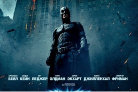
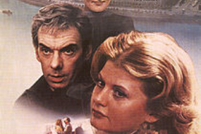

Любимые фильмы

Бэтмен
«Тёмный рыцарь» (англ. The Dark Knight) — супергеройский боевик с элементами неонуара режиссёра Кристофера Нолана. Вторая часть новой трилогии о Бэтмене. Главные роли в фильме исполнили Кристиан Бэйл и Хит Леджер, в ролях Бэтмена и его заклятого врага — Джокера

Престиж
Фокусник Альфред Борден (Кристиан Бэйл) осуждён за убийство Роберта Энжиера (Хью Джекман), своего соперника. Оба работали ассистентами у «Иллюзиониста Милтона» (Рики Джей) и инженера Джона Каттера (Майкл Кейн).

Москва слезам не верит
«Москва слезам не верит» — советский мелодраматический фильм режиссёра Владимира Меньшова. Москва, конец 1950-х годов. В столичном общежитии живут три 18-летние подруги, приехавшие из провинции. Их судьбы складываются именно так, как предполагает характер каждой из девушек.

Начало
Доминик Кобб (Леонардо Ди Каприо) занимается промышленным шпионажем, используя технологию совместных сновидений. В начале фильма Кобб пытается получить важные сведения у японского бизнесмена по имени Сайто, но терпит неудачу. После этого Сайто сам выходит на Кобба и предлагает ему работу: нужно осуществить внедрение — с помощью сна внушить Роберту Фишеру, сыну энергетического магната Мориса Фишера, идею, которая могла бы разрушить империю его отца. Взамен Сайто поможет Коббу легально вернуться в США, где остались его дети.

Отступники
«Тёмный рыцарь» (англ. The Dark Knight) — супергеройский боевик с элементами неонуара режиссёра Кристофера Нолана. Вторая часть новой трилогии о Бэтмене. Главные роли в фильме исполнили Кристиан Бэйл и Хит Леджер, в ролях Бэтмена и его заклятого врага — Джокера
Престиж
Фокусник Альфред Борден (Кристиан Бэйл) осуждён за убийство Роберта Энжиера (Хью Джекман), своего соперника. Оба работали ассистентами у «Иллюзиониста Милтона» (Рики Джей) и инженера Джона Каттера (Майкл Кейн).
Игры разума
«Москва слезам не верит» — советский мелодраматический фильм режиссёра Владимира Меньшова. Москва, конец 1950-х годов. В столичном общежитии живут три 18-летние подруги, приехавшие из провинции. Их судьбы складываются именно так, как предполагает характер каждой из девушек.
Начало
Доминик Кобб (Леонардо Ди Каприо) занимается промышленным шпионажем, используя технологию совместных сновидений. В начале фильма Кобб пытается получить важные сведения у японского бизнесмена по имени Сайто, но терпит неудачу. После этого Сайто сам выходит на Кобба и предлагает ему работу: нужно осуществить внедрение — с помощью сна внушить Роберту Фишеру, сыну энергетического магната Мориса Фишера, идею, которая могла бы разрушить империю его отца. Взамен Сайто поможет Коббу легально вернуться в США, где остались его дети.